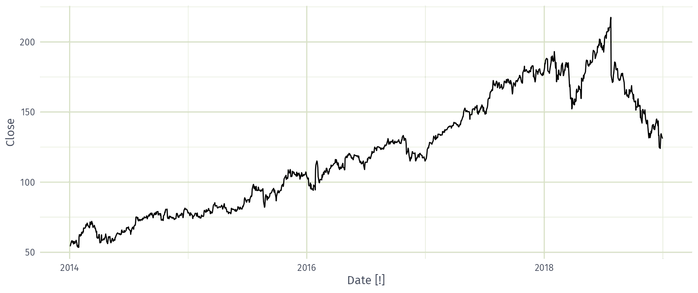
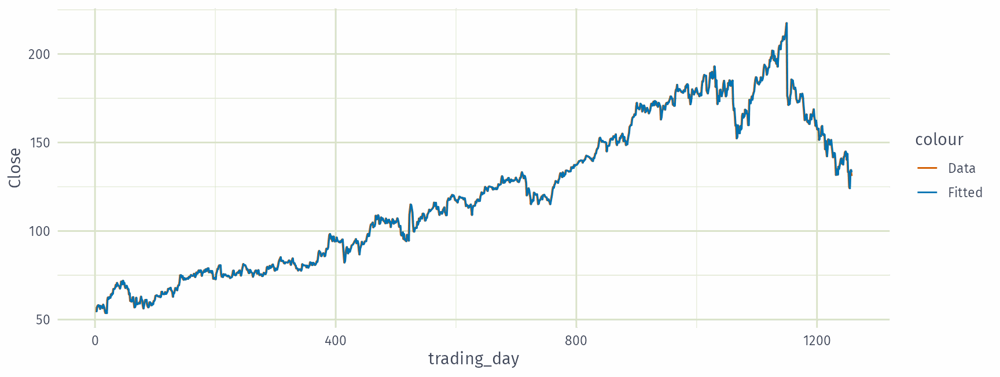
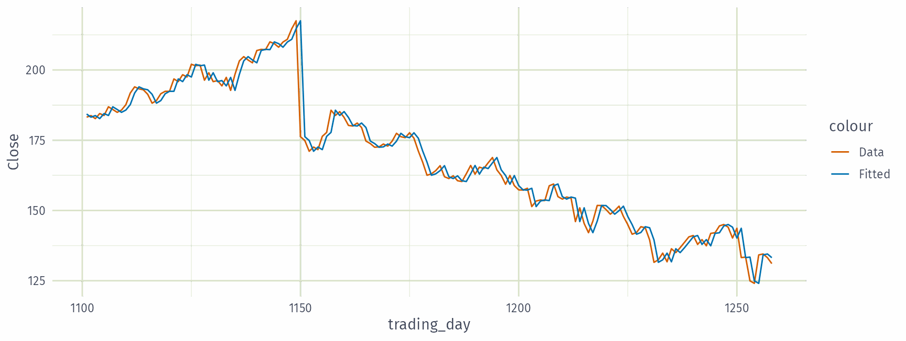
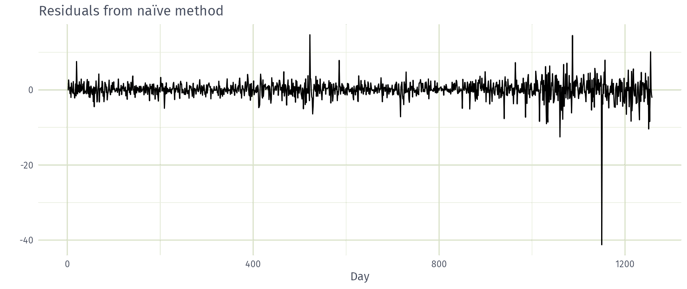
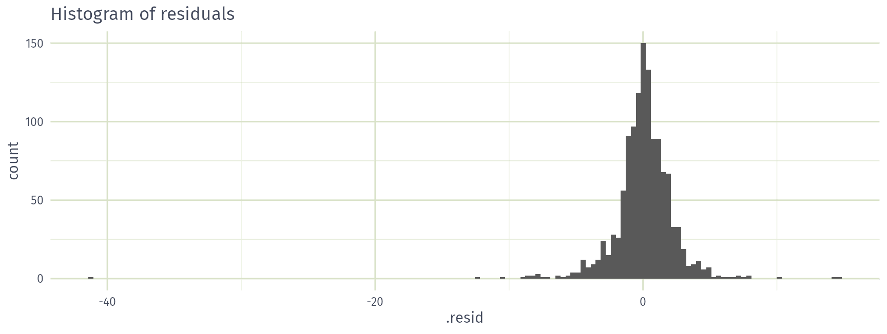
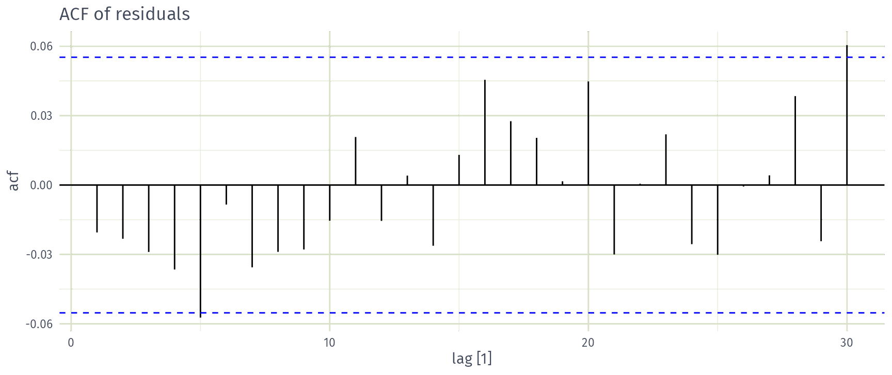
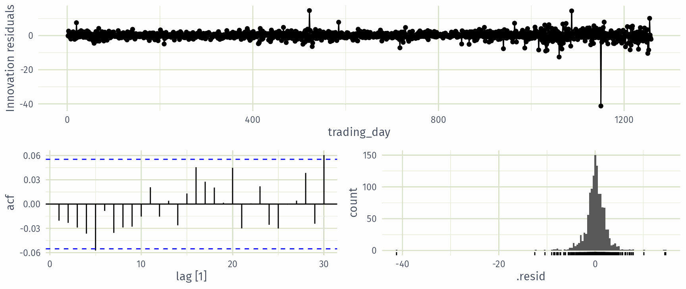
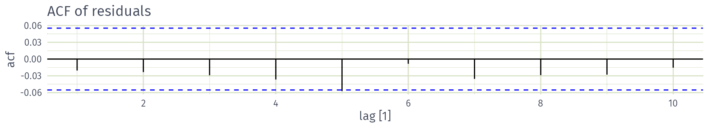

forecast_horizon <- 12
test <- antidiabetic_drug_sale |>
slice((n()-forecast_horizon+1):n())
train <- antidiabetic_drug_sale |>
slice(1:(n()-forecast_horizon))
drug_sale_tcsv <- train |>
stretch_tsibble(.init = 24, .step = 1) AFRICAST
AFRICASTTidy time series & forecasting in R
Residual diagnostics and cross validation
Session 9 of 10


workshop.f4sg.org/africastForecasting for Social Good
Outline
- Time series cross-validation
- Residual diagnostics
- Recap
Time series cross-validation
Issue with traditional train/test split

Time series cross-validation

Time series cross-validation
Time series cross-validation
- Forecast accuracy averaged over test sets.
- Also known as “evaluation on a rolling forecasting origin”
Creating the rolling training sets
There are three main rolling types which can be used.
- Stretch: extends a growing length window with new data.
- Slide: shifts a fixed length window through the data.
- Tile: moves a fixed length window without overlap.
Three functions to roll a tsibble: stretch_tsibble(), slide_tsibble(), and tile_tsibble().
For time series cross-validation, stretching windows are most commonly used.
Time series cross-validation
Stretch with a minimum length of 24, growing by 1 each step.
# A tsibble: 3,819 x 3 [1M]
# Key: .id [67]
Month Cost .id
<mth> <dbl> <int>
1 2000 Jan 12.5 1
2 2000 Feb 7.46 1
3 2000 Mar 8.59 1
4 2000 Apr 8.47 1
# ℹ 3,815 more rowsTime series cross-validation
Estimate seasonal naïve models for each window.
# A mable: 67 x 2
# Key: .id [67]
.id snaive
<int> <model>
1 1 <SNAIVE>
2 2 <SNAIVE>
3 3 <SNAIVE>
4 4 <SNAIVE>
# ℹ 63 more rowsTime series cross-validation
Produce 12-step-ahead forecasts from each window.
# A fable: 804 x 5 [1M]
# Key: .id, .model [67]
.id .model Month
<int> <chr> <mth>
1 1 snaive 2002 Jan
2 1 snaive 2002 Feb
3 1 snaive 2002 Mar
4 1 snaive 2002 Apr
# ℹ 800 more rows
# ℹ 2 more variables: Cost <dist>, .mean <dbl>Time series cross-validation
# A tibble: 1 × 15
.model .type ME RMSE MAE MPE MAPE MASE RMSSE ACF1 winkler pinball
<chr> <chr> <dbl> <dbl> <dbl> <dbl> <dbl> <dbl> <dbl> <dbl> <dbl> <dbl>
1 snaive Test 1.86 2.42 1.94 10.4 10.9 1.20 1.22 0.395 15.3 0.814
# ℹ 3 more variables: scaled_pinball <dbl>, percentile <dbl>, CRPS <dbl>Residual diagnostics
Forecasting residuals
Residuals in forecasting: difference between observed value and its fitted value: \(e_t = y_t-\hat{y}_{t|t-1}\).
Assumptions
- \(\{e_t\}\) uncorrelated. If they aren’t, then information left in residuals that should be used in computing forecasts.
- \(\{e_t\}\) have mean zero. If they don’t, then forecasts are biased.
Useful properties (for prediction intervals)
- \(\{e_t\}\) have constant variance.
- \(\{e_t\}\) are normally distributed.
Facebook closing stock price

Facebook closing stock price
# A tsibble: 1,258 x 7 [1]
# Key: Symbol, .model [1]
Symbol .model trading_day Close .fitted .resid .innov
<chr> <chr> <int> <dbl> <dbl> <dbl> <dbl>
1 FB NAIVE(Close) 1 54.7 NA NA NA
2 FB NAIVE(Close) 2 54.6 54.7 -0.150 -0.150
3 FB NAIVE(Close) 3 57.2 54.6 2.64 2.64
4 FB NAIVE(Close) 4 57.9 57.2 0.720 0.720
5 FB NAIVE(Close) 5 58.2 57.9 0.310 0.310
6 FB NAIVE(Close) 6 57.2 58.2 -1.01 -1.01
7 FB NAIVE(Close) 7 57.9 57.2 0.720 0.720
8 FB NAIVE(Close) 8 55.9 57.9 -2.03 -2.03
9 FB NAIVE(Close) 9 57.7 55.9 1.83 1.83
10 FB NAIVE(Close) 10 57.6 57.7 -0.140 -0.140
# ℹ 1,248 more rowsFacebook closing stock price

Facebook closing stock price

Facebook closing stock price

Facebook closing stock price

Facebook closing stock price

ACF of residuals
We assume that the residuals are white noise (uncorrelated, mean zero, constant variance). If they aren’t, then there is information left in the residuals that should be used in computing forecasts.
So a standard residual diagnostic is to check the ACF of the residuals of a forecasting method.
We expect these to look like white noise.
Combined diagnostic graph

Ljung-Box test
Test whether whole set of \(r_{k}\) values is significantly different from zero set.
\(\displaystyle Q = T(T+2) \sum_{k=1}^\ell (T-k)^{-1}r_k^2\) \(\qquad\) where \(\ell=\) max lag and \(T=\) # observations
- If each \(r_k\) close to zero, \(Q\) will be small.
- If some \(r_k\) values large (\(+\) or \(-\)), \(Q\) will be large.
- My preferences: \(h=10\) for non-seasonal data, \(h=2m\) for seasonal data.
- If data are WN and \(T\) large, \(Q \sim \chi^2\) with \(\ell\) degrees of freedom.
Ljung-Box test
\(\displaystyle Q = T(T+2) \sum_{k=1}^\ell (T-k)^{-1}r_k^2\) \(\qquad\) where \(\ell=\) max lag and \(T=\) # observations.

Recap
Recap
- First, import your data and prepare them using
tsibblefunction. - Visualise and see whether your series contains key patterns. Use domain knowledge to understand your data and potential driving factors.
- Split the data to create a training set, which you will use as an argument in your forecasting function(s). You can also create a test set to use later.
- Create different rolling origins to evaluate forecast accuracy using time series cross validation
Recap
- Train model to each origin
- Compute forecast accuracy, use the
accuracy()function with thefableas the first argument and original data as the second. - Compare methods using point, prediction interval and distributional accuracy measure; a smaller error indicates higher accuracy.
- Forecast using all data for the future using the best method.
- Use residual diagnostic based on residuals of the best model.